Q. 운영진 모집에 있어 우대하는 학과가 있나요?
아니요! 이화이언 운영진에는 다양한 전공의 벗들이 속해 있어, 이화이언을 사랑하는 마음과 열정으로 충분히 운영진 활동을 펼쳐나갈 수 있답니다!

아니요! 이화이언 운영진에는 다양한 전공의 벗들이 속해 있어, 이화이언을 사랑하는 마음과 열정으로 충분히 운영진 활동을 펼쳐나갈 수 있답니다!
네, 지원서 제출 기한 전까지는 지원하기 페이지에서 기존 지원자를 선택하시면 해당 페이지에서 수정이 가능합니다.
이화이언에 대한 애정과 열정이 제일 중요하겠지만, 학번에 상관 없이 최소 3학기 활동이 가능해야 합니다.
네, 가능합니다! 수습 운영진으로 활동하는 기간 동안, 팀 수습 과제를 통해 팀 업무에 대한 이해도를 높일 수 있습니다.
이화이언 운영진에게는 매달 전체 운영진 회식비가 제공되고, 우수 운영진 대상으로는 기프티콘도 지급됩니다. 또한 인터넷 강의나 교육 도서, 유료 프로그램도 지원되며 매 학기 우수 운영진에게 소정의 장학금을 지급합니다. 정말 다양한 혜택으로 가득하지 않나요? (p.s. 이 밖에도 들어오면 많은 혜택과 좋은 점들이 가득하답니다!)
시험 기간에는 운영진 내 투표를 통해 휴회 날짜를 정한 후, 1-2주 정도 전체 회의를 쉬어가게 됩니다.
팀 업무를 제외하고, 건전한 사이트 운영을 위한 모니터링 업무와 이화이언 행사 운영 등의 활동을 하게 됩니다.
이화이언은 시험기간과 공휴일을 제외하고, 매주 월요일 저녁에 전체 회의를 진행합니다. 전체 회의 시간은 매 학기 운영진의 투표를 통해 결정됩니다.
네, 있습니다! 전체 회의 시간과 업무에 대한 교류는 물론, 회식과 MT 등의 활동을 통해 다른 팀 운영진들과 교류할 수 있습니다.
이화이언은 다방면의 경험을 깊게 쌓아갈 수 있는 최고의 포트폴리오와도 같다고 하죠! 이화이언에서의 활동은 어디든 유용하게 사용될 수 있는 소중한 경험과도 같답니다.
현재 이화이언을 수료하신 다수의 선배님들께서는 삼성전자, LG, 중앙일보, JTBC, 디즈니, 롯데, 신한은행 등 이화이언에서의 다양한 경험을 필두로 여러 분야에서 활발하게 활동하고 계십니다.